已完成 10/10 个运行。各阶段从头初始化；主表比较相同更新预算的最终权重。PCC/SSIM 来自 ILM–OPL 投影，验证指标按 4 位患者等权汇总。
| 实验组 | 训练 PCC ↑ | 训练 SSIM ↑ | 验证 PCC ↑ | 验证 SSIM ↑ | 验证血管区 MAE ↓ | 验证 3D MAE ↓ |
|---|---|---|---|---|---|---|
| 01 · 3D FM | 0.2512 | 0.1568 | 0.3215 | 0.2016 | 0.1117 | 0.0402 |
| 02 · +三维小波 | 0.2909 | 0.1785 | 0.3333 | 0.1861 | 0.0890 | 0.0380 |
| 03 · +Z 投影 | 0.2683 | 0.1493 | 0.3303 | 0.1958 | 0.1070 | 0.0355 |
| 04 · +三维小波+Z 投影 | 0.2649 | 0.1675 | 0.3205 | 0.1928 | 0.0998 | 0.0383 |
| 05 · +三维小波+Z 投影+图像重建 | 0.2886 | 0.1648 | 0.3170 | 0.1861 | 0.1013 | 0.0368 |
| 实验组 | 训练 PCC ↑ | 训练 SSIM ↑ | 验证 PCC ↑ | 验证 SSIM ↑ | 验证血管区 MAE ↓ | 验证 3D MAE ↓ |
|---|---|---|---|---|---|---|
| 01 · 3D FM | 0.2714 | 0.2141 | 0.2970 | 0.2040 | 0.1636 | 0.0239 |
| 02 · +三维小波 | 0.3258 | 0.2314 | 0.3252 | 0.1901 | 0.0950 | 0.0255 |
| 03 · +Z 投影 | 0.2239 | 0.1986 | 0.2723 | 0.2061 | 0.1794 | 0.0267 |
| 04 · +三维小波+Z 投影 | 0.3240 | 0.2374 | 0.3258 | 0.1999 | 0.1060 | 0.0273 |
| 05 · +三维小波+Z 投影+图像重建 | 0.2967 | 0.2468 | 0.2779 | 0.1888 | 0.1302 | 0.0281 |
固定体块、单随机种子的小样本诊断，不能视作完整训练后的方法排名。单病例与四病例阶段预算不同，不能直接归因于病例数变化。图片固定显示窗，点击可查看原图。
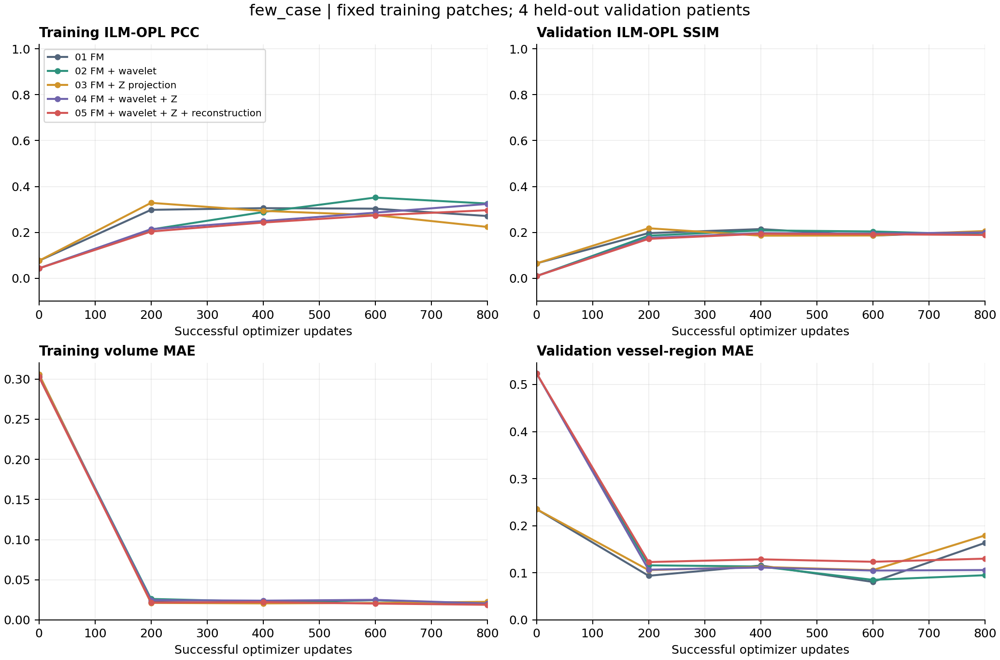
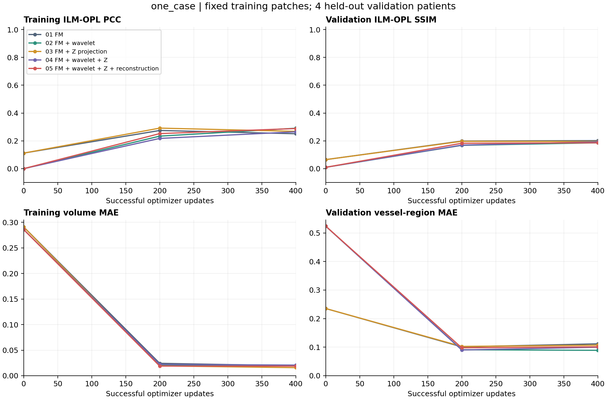
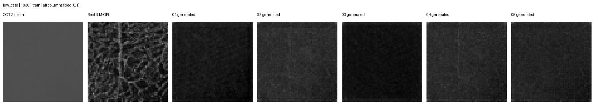
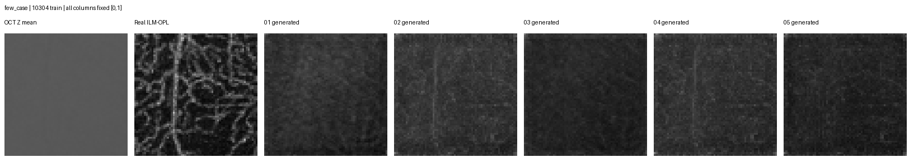
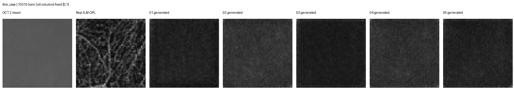
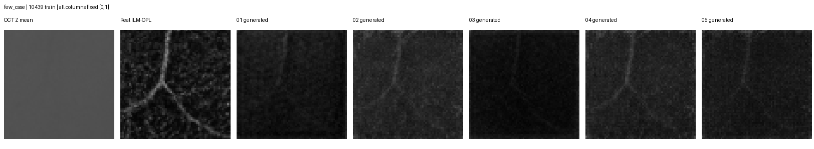
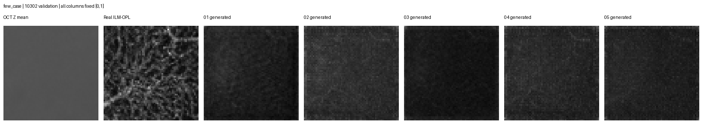
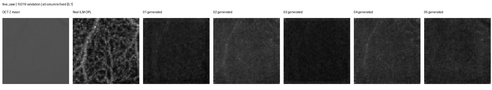
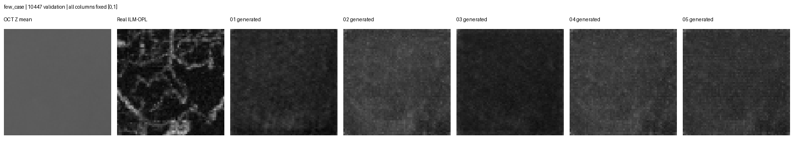
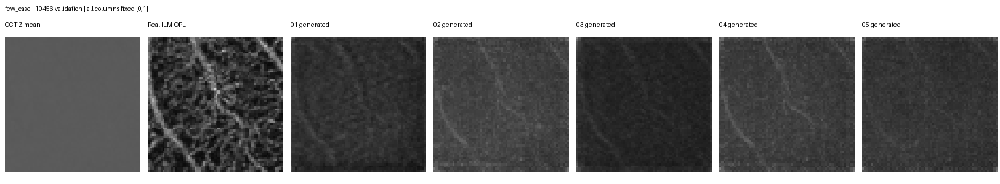
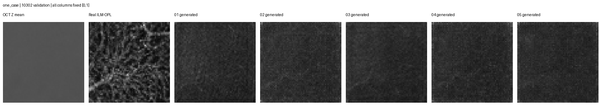
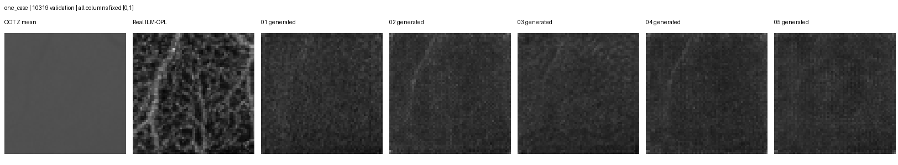
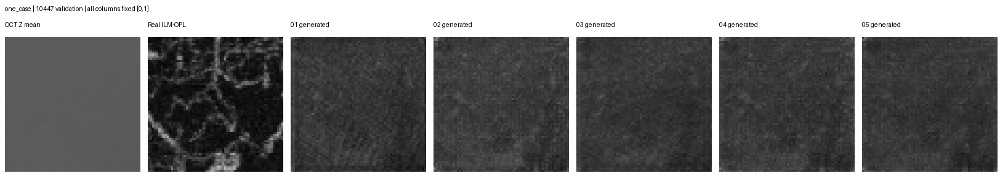
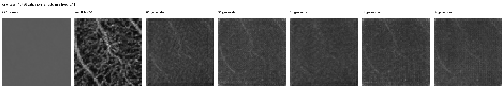